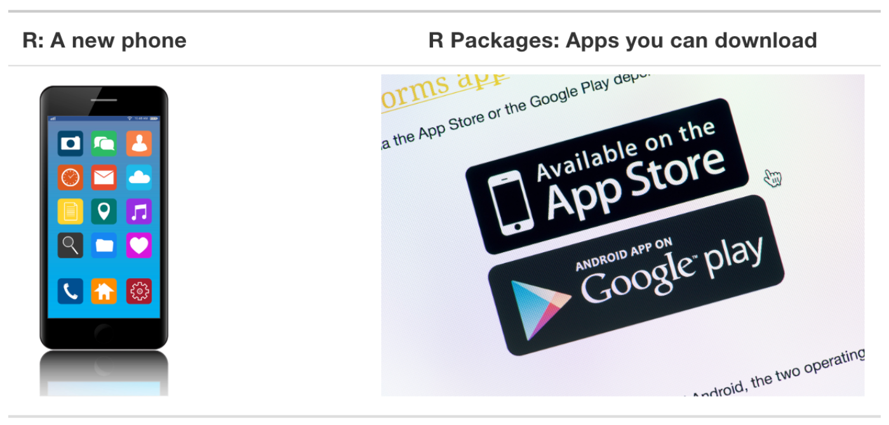
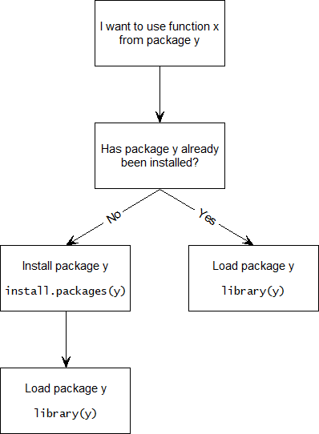
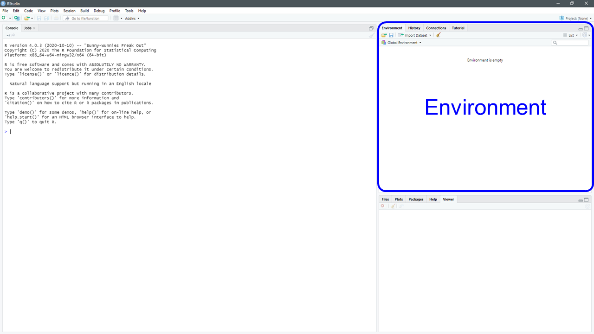
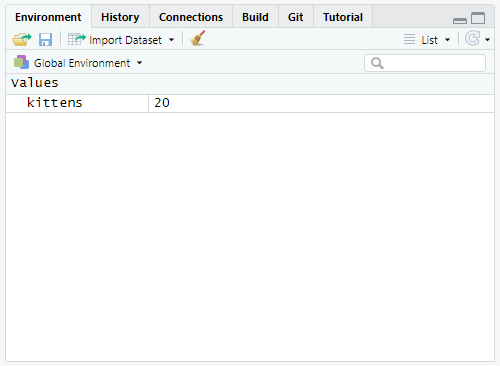
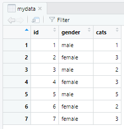

2 Getting Started
Remember that you need either Posit Cloud or both R and RStudio. If you need R and RStudio, follow the instructions below to install both programs (also known as applications). If you are using Posit Cloud, skip to Section 2.3.
2.1 Installing R
On a web browser, navigate to https://cloud.r-project.org/.
- If you are a Windows user: Click on “Download R for Windows”, then click on “base”, then click on the Download link.
- If you are macOS user: Click on “Download R for (Mac) OS X”, then under “Latest release:” click on
R-X.X.X.pkg, whereR-X.X.Xis the version number. For example, the latest version of R (as of this writing) isR-4.5.1. - If you are a Linux user: Click on “Download R for Linux” and choose your distribution for more information on installing R for your setup.
During installation, select the default settings when prompted.
2.2 Installing RStudio
On a web browser, go to https://rstudio.com/products/rstudio/download/. Scroll down to All Installers. Download and install the version of RStudio that corresponds to your operating system. Update RStudio as necessary.
When you are ready to use R, you will open RStudio. In this course, you will rarely, if ever, need to use “base R.” Figure 2.1 shows you which icon to click on to open RStudio. Remember that you need to have both programs installed on your computer–one does not work without the other.
Important
From this point on, when “R” is referenced in the text, you know that you are accessing and using the language through RStudio.
2.3 How do I use R?
Unlike Excel, which has a point-and-click GUI, R is an interpreted language. This means that you, the user, must type in commands written in R code. In other words, this course will teach you to code or program using the R language.1
In COMM 3710, we will learn R by “doing.” You are responsible for your own learning–the best way to master R is to practice deliberately.
“While regular practice might include mindless repetitions, deliberate practice requires focused attention and is conducted with the specific goal of improving performance.” (Clear 2017)
2.3.1 A quick tour of RStudio
Watch this video by Andy Field to take a quick tour of RStudio.
As you have learned from Andy Field’s video, the RStudio interface consists of four panels (Figure 2.2).
Wait! I only see 3 panels…
If you happen to see only three panels, please select File \(\rightarrow{}\) New File \(\rightarrow{}\) R Script. Your RStudio should look like Figure 2.2.

2.3.2 Some basic terminology and concepts
Throughout the book, R code will be distinguished from text by using a different font. Let’s start with some basic terms.
- Console: This is the panel in RStudio where you can view the output or results of your commands. Note that you can also enter commands in the Console panel. Pressing Enter after each command runs it, i.e., it tells R to execute the command.
- Editor: This is the panel in RStudio where you type commands in language that R understands. Think of this as a script containing instructions for R. You can save this script, which makes the work you have done reproducible.
- R script: A script is simply a text file containing a set of commands and comments. The script can be saved and used later to (re-)execute the saved commands. The script can also be edited so you can execute a modified version of the commands.
- Objects: Values in R are saved in objects.
- Dataframes: These are representations of datasets in R where the rows correspond to observations and the columns correspond to variables that describe the observations.
- Logical operators: These are operators in R that represent “and” (
&) and “or” (|). - Functions: Functions are also known as commands. Functions and commands tell R what you want it to do. Functions take the form of
command()with parentheses (or parents). The parentheses are for arguments, which give R specifics about the function you want it to perform.
2.3.3 Errors, warnings, and messages
R shows errors, warnings, and messages in the Console window. Typically, it does so in red font, which can be intimidating for new users.
Do not worry, you are unlikely to “break” R. And as long as you save your work frequently, you will not lose it.
Tip
Always read errors, warnings, or messages carefully; they often provide information that will help you troubleshoot the issue.
2.3.4 Tips for learning to code
Learning to code can be frustrating at first. Frustrations are understandable and inevitable. But with deliberate practice, your coding and programming skills will improve.
Keep the following tips from Ismay and Kim (2021) in mind as you learn to code in R:
- Computers are not that smart. You are the brains of the computer–it needs to be told what to do. Instructions must be clear and without ambuguity.
- Copy, paste, tweak. When you begin to learn coding, it is much easier to copy, paste, and modify code than start from scratch. When you first start to program, take existing code from the resources for this course, copy, paste, and tweak them to suit your goals. Once you become more comfortable with R, you will be able to recall functions and code from memory.
- Learning by doing. The best way to learn coding/programming is by doing. This is why COMM 3710 includes a lab component. Individual lab assignments and group project components afford you the opportunity to learn how to code and use R by completing tasks with a goal in mind.
- Practice, practice, practice. As with any skill, practice is necessary for improvement. Start on assignments early–anticipate that you will face challenges the first time you try an assignment. Use the resources provided in the course to help you troubleshoot. Most students do not start their assignments early enough to troubleshoot issues that arise. You can also use R for other courses–it is a versatile programming language that is powerful once you learn to use it. In fact, this book was made with R!
- R is case-sensitive. Most coding mistakes are typos. This is exacerbated when the programming language, such as R, is case-sensitive.
Result,result, andRESULTare all different in R!
2.3.5 R packages
There is a worldwide community of R users (e.g., search for #RCatLadies on X) who write code and bundle them into packages to extend the functionality of R.
Some examples that we will use in this course include ggplot2 (Wickham, Navarro, and Pederson 2020), descr, and tidyverse.
Packages in R are like apps on your phone–they extend the functionality of the base technology (Figure 2.3).

There are two steps to using apps to extend the functionality of your phone:
- Install app on your device from app store. This is typically done only once. An app that has been installed on your phone does not require additional installation.
- Open app from device. You must open the app every time you wish to use it.
Similarly, R packages need to be installed on your computer and then opened and then loaded in R (Figure Figure 2.4). Note where quotation marks are used and omitted in the commands.

- To install a package, type
install.packages()in the Console window. The argument that needs to be provided is the name of the package. For example, if you are installing thedescrpackage, you would use the commandinstall.packages("descr"). Like an app, you only need to install a package once. - To use a package, you must load it. This is like opening an app–it must be done everytime you open a new R session. To load a package, use the command
library(). The argument within the parentheses is the name of the package you want to load. For example, to load thedescrpackage, uselibrary(descr).
Some common errors related to installing and loading packages, which R displays in red in the Console, are shown below:
Error in library(descr) : there is no package called ‘descr’If you get this error, this means that you have not installed the package.
Error: could not find functionThis error means that you likely did not load the package for this R session. Remember, you need to load R packages each time you open R.
2.3.6 How do I know whether I need to install or load a package?

2.4 Learning by doing
Let’s try out some commands. Open RStudio and start a new R script. If you need a reminder of how to start a new R script, review Section 2.3.1. To save your R script, see Section 3.7.
To start, let’s execute a simple command. In the Editor, type the following command.
4 + 8To run this command, which tells R to sum 4 and 8, highlight the command and click the button in the upper right of the Editor window. You can also use the shortcut keys: Ctrl + Enter (Windows) or Cmd + Enter (Mac).
You will see the result of the command you just ran in the Console window.
[1] 12Note that the [1] is produced by R. You can think of this as R telling you that this value, 12, is the answer to the first question you asked.2
Next, try:
3 * 3When you run this command, R will return the product of these two numbers.
[1] 9Although it is good practice to write and execute commands line-by-line when you are first writing a R script, it can become tedious. To alleviate the tedium, you can run multiple commands at once by selecting all the lines that you want R to execute and using the keyboard shortcuts or the button.
Type the following two lines in your Editor and try running them together:
12 + 8
16 / 4The results in your Console panel should look like this:
[1] 20[1] 4Table 2.1 shows some basic arithmetic operations in R. Play around with these functions in R to familiarize yourself with the R interface.
| Operation | Operator | Input | Output |
|---|---|---|---|
| addition/sum | + | 2 + 2 | 4 |
| subtraction | - | 9 - 2 | 7 |
| multiplication/product | * | 5 * 5 | 25 |
| division | / | 12 / 3 | 4 |
| power/exponent | ^ | 5 ^ 2 | 25 |
2.4.1 Creating objects
R is an OOP or object-oriented programming language.
You can think of an object as a container that holds information that you, the user, assigns to it. You will need to assign a label to the container. R stores the information within the labeled container in the Environment ( Figure 2.6), which is the one of the tabs in the top right panel of RStudio.

We assign information to an object by using the assignment operator, <-. The generic code for creating an object looks like:
label <- informationLet’s say that we want to save the result of 2 * 10 to an object and call it kittens. In the Editor window, type and run the following R code:
kittens <- 2 * 10Notice that the result in the Console when you ran this command did not give you the result of 2 * 10.
This is because the result is stored as the object, kittens, and you have to ask R to display the result by calling the object. In the Editor, type kittens and run this command. You should see the result in the Console.
kittens[1] 20Notice that the object, kittens, appeared in the Environment when you ran the command, kittens <- 2 * 10 (Figure 2.7).

kittens.
2.4.2 Data types
R can store objects with different types of data. Let’s create three objects containing different data types.
a <- 19.81
b <- "Hello, Salt Lake City!"
c <- TRUETo check the type of data contained in objects a, b, and c, use the class() function.
class(a)
class(b)
class(c)Your Console should show:
[1] "numeric"[1] "character"[1] "logical"a is numeric; b is a character string; c is a so-called “logical” data type that is either TRUE or FALSE. These data types can be organized into various data structures. For example, a data frame, such as the data files you will use in your assignments, is one data structure.
2.4.3 R Functions
As mentioned in Section Section 2.3.2, functions are commands that tell R what you want it to do. Functions take the (generic) form of command() with parentheses (or parents). The parentheses are for arguments, which give R specifics about the function you want it to perform.
For example, the print() function will print the result of the argument or input within the parentheses.
print("Hello, SLC!")[1] "Hello, SLC!"print(5 * 10)[1] 50print(3 > 5)[1] FALSE2.4.4 Working with data frames
Let’s create a data frame to learn how to work with them. In the Editor panel, create a data frame by typing the following commands:
id <- 1:7
cats <- c(1, 3, 2, 3, 5, 2, 3)
gender <- c('male', 'female', 'male', 'female', 'male', 'female', 'female')With the code above, you have created 3 objects, id, cats, and gender, using the concatenate() function, which can be shortened to c(). Assume these data represent 7 individuals who own a varying number of cats. And we have data on each individual’s gender.
Let’s create a data frame from these individual objects.
mydata <- data.frame(id, gender, cats)
View(mydata)After running the commands above, notice that your Environment panel now looks like Figure 2.8. Your data frame should look like Figure 2.9.


Using the mydata data frame, we will calculate the mean number of cats an individual in our data set owns.
mean(mydata$cats)[1] 2.714286The $ allows us to extract a column of data, or a variable, from the mydata data frame. The use of $ will be important when working with R throughout this course.
To see how many females vs. males are included in the data frame, use the following command.
table(mydata$gender)
female male
4 3 Let’s now look at only the number of cats owned by males in our data. This means we need to subset the data. To do so, we use square brackets, [] combined with logical operators. In this case, we will use the logical operator, ==, which means “equal to.”
mydata$cats[mydata$gender == "male"][1] 1 2 5To calculate the mean number of cats owned by males, we can either create a second data frame that is the subset of mydata…
Monly <- subset(mydata, gender == "male")
mean(Monly$cats) # in this case, we must use the column, cats, in the data frame that has been subsetted, Monly.[1] 2.666667or we can include the last command as an argument in the mean() function.
mean(mydata$cats[mydata$gender == "male"])[1] 2.6666672.4.5 Logical operators
We used one possible logical operator, ==, in the example above. Other logical operators include:
<: less than<=: less than or equal to>: greater than>=: greater than or equal to!=: not equal to==: equal to&: and (e.g.,a & bmeans “a AND b”)|: or (e.g.,a | bmeans “a OR b”)
We can also use ! to specify a condition as not something. Returning to our example of the mean number of cats males in mydata own, we could instead calculate the mean of cats owned by all individuals who are != "female" or “not female.”
mean(mydata$cats[mydata$gender != "female"])[1] 2.666667Figure 2.10 is a visual representation of the differences between some logical operators.

Clear, James. 2017. “The Beginner’s Guide to Deliberate Practice.” James Clear. January 23, 2017. https://jamesclear.com/beginners-guide-deliberate-practice.
Ismay, Chester, and Albert Y. Kim. 2021. Statistical Inference via Data Science. https://moderndive.com/.
Wickham, Hadley, Danielle Navarro, and Thomas Lin Pederson. 2020. Ggplot2: Elegant Graphics for Data Analysis. 3rd ed. Use R! New York, NY: Springer-Verlag. https://ggplot2-book.org/.